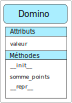
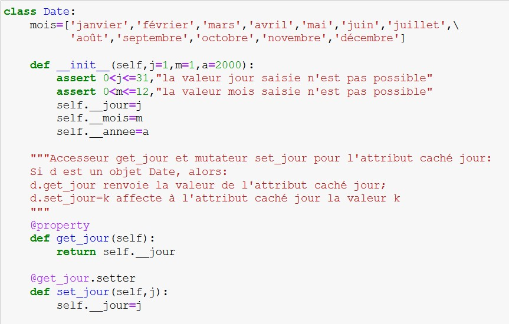

Exercices d’approfondissement#
Exercice 1#
On reprend le travail effectué dans l’activité sur les classes Point et Segment.
On propose de créer 2 nouvelles classes Cercle et Triangle.
La classe
Cerclecrée des objets dont les attributs sont un objetPointet un nombre pour le rayon. Lorsqu’on construit un objet de typeCercle, le centre et le rayon sont passés en arguments.La classe
Trianglecrée des objets dont les attributs sont trois côtés définis comme objetsSegmentLorsqu’un objet de typeTriangleest construit, les trois points sommets sont passés en arguments.
Pour la classe
Cercle.Écrire le constructeur de la classe définissant les attributs
centreetrayon.Écrire la méthode
airequi calcule l’aire du cercle avec la formule \(\pi \times rayon^{2}\).
Pour la classe
Triangle.Écrire le constructeur de la classe définissant les attributs
cote_1,cote_2etcote_3. On rappelle que ce sont trois points qui sont passés en argument lors de la construction d’un objet.La formule de Héron permet de calculer l’aire d’un triangle avec les longueurs des 3 côtés du triangle. On en donne la formule: \(\sqrt{p(p-a)(p-b)(p-c)}\) où \(a\), \(b\), \(c\) sont les longueurs des côtés du triangle et \(p\) le demi-périmètre du triangle.
Écrire la méthode
airequi renvoie l’aire d’un triangle calculée avec la méthode de Héron.
Exercice 2#
On définit l’objet Compte_bancaire dont voici l’interface :
Attributs :
soldeettitulaireMéthodes :
est_positif,crediter,debiter,virer_vers,afficherou__repr__
Écrire la classe
Compte_bancaire, son constructeur__init__puis les différentes méthodes.Tester en créant un compte bancaire A avec un solde de 1000 euros et un compte bancaire B avec un solde bancaire de 200 euros.
Effectuer un virement de 300 euros de A vers B.
Interdire tout virement si le solde du compte est négatif.
Exercice 3#
Le jeu de cartes peut être construit avec différentes structures de données Python. On se propose de créer un tel jeu avec deux classes. La classe Carte pour chaque carte du jeu et la classe Paquet qui sera composé de 52 objets de type Carte.
{kind=link}
On donne la structure globale de nos deux classes:
class Carte:
# constructeur
# valeur de la carte
# couleur de la carte
class Paquet:
# constructeur
# remplir un paquet
# mélanger le paquet
# tirer une carte en position donnée
Vous devez coder les 2 classes en prenant en compte les indications ci-dessous pour les méthodes.
Le constructeur de la classe
Cartea 2 paramètrescetvcorrespondant à la couleur et à la valeur de la carte.La méthode
get_couleurrenvoie la couleur de la carte, c’est à dire une valeur parmicoeur,carreau,piqueettrèfle. La valeur renvoyée est une chaine de caractères.La méthode
get_valeurrenvoie la valeur de la carte. On distinguera les cas particuliers des cartes as, valet, dame et roi.Le constructeur de la classe
Paquetinitialise l’attibutcontenuavec une liste vide.La méthode
remplirajoute à la listecontenules 52 cartes du jeu. Chaque carte étant un objet de type Carte.La méthode
melangerse charge de mélanger de façon aléatoire le contenu du paquet de cartes.La méthode
get_carte_atprend en paramètre un entier n compris entre 1 et 52 (compris) et renvoie la carte qui se trouve en position n dans le paquet. Attention au décalage.
Vérifier que vos classes vous permettent:
de fabriquer un paquet de carte
d’afficher une carte choisie dans le paquet
Exercice 4#
{kind=link}
Le jeu de dominos est constitué de 28 pièces. Une pièce de domino est en deux parties. Chaque partie contient de 0 à 6 points. Lorsque les deux parties ont le même nombre de points, les dominos sont doubles. Il y a 7 doubles dans un jeu : du double 0 au double 6.
La classe Domino définit l’objet domino avec a un seul attribut
valeur. L’attribut est un tuple représentant les points de chaque moitié du domino.Les méthodes de cette classe sont:
Le constructeur
__init__qui initialise l’attributvaleuravec un tuple dont les valeurs sont passées en paramètres.La méthode
somme_pointsqui renvoie la somme des points du domino.La méthode
__repr__qui affiche le domino, par exemple[a|b].
On donne ci-dessous le code de la classe à compléter:
class Domino: """ Objet avec 1 attribut valeur. Cet attribut est de type tuple représentant les points de chaque moitié du domino. Par exemple (3,5) est un domino. """ def __init__(self,a,b): """ Constructeur définissant l'attibut valeur de type tuple. L'attribut valeur est initialisé avec les deux valeurs a et b passées en paramètre. Ces valeurs sont des nombres entiers compris entre 0 et 6 inclus. On effectue un contrôle sur les paramètres. """ pass def somme_points(self): """ Méthode qui renvoie la somme des points du domino. """ pass def __repr__(self): """ Cette méthode renvoie une chaine de caractère représentant le domino. Par exemple, le domino de valeur (2,5) renvoie la chaine "[2|5]". Cette méthode est particulière car elle répond à l'utilisation de la fonction print. """ pass
La classe
Jeua un seul attribut et 2 méthodes.L’attribut
dominosest une liste contenant les 28 dominos du jeu. Chaque domino est un objetDomino.Les méthodes de cette classe sont:
Le constructeur
__init__initialise l’attributdominosavec une liste dont les valeurs sont les 28 dominos du jeu.La méthode mélange qui range dans un ordre aléatoire la liste des 28 dominos.
On donne ci-dessous le code de la classe à compléter:
class Jeu: """ Objet qui a un seul attribut dominos de type liste. La liste contient les 28 dominos qui sont des objets de la classe Domino. """ def __init__(self): """ Le constructeur définit l'attribut dominos de type liste. Cette liste contient les 28 objets dominos constituant le jeu. Attention un objet domino de valeur (2,5) est le même que l'objet domino de valeur (5,2). Il faut définir l'un ou l'autre. """ pass def melanger(self): """ Cette méthode mélange le jeu de dominos. Elle modifie l'ordre des dominos contenus dans la liste. """ pass
La classe
Joueura 3 attributs et 2 méthodes.L’attribut
nomcontient le nom du joueurL’attribut
agecontient l’age du joueurL’attribut
dominosest une liste qui contient les dominos du joueur
Les méthodes de cette classe sont:
Le constructeur
__init__initialise les attributsnometageavec les valeurs passées en paramètres et l’attributdominosavec une liste vide.La méthode
piocherajoute un domino au joueur en le retirant de l’objet construit avec la classeJeu.
On donne ci-dessous le code de la classe à compléter:
class Joueur: """ Un joueur contient jusqu'à 6 ou 7 dominos (selon le nombre de joueurs) pris parmi le jeu de dominos. Chaque joueur est identifié par un nom et sa liste de dominos. """ def __init__(self,nom): """ Constructeur qui définit les attributs nom et dominos. L'attribut nom est initialisé avec la valeur passée en paramètre. L'attribut age est initialisé avec la valeur passée en paramètre. L'attribut dominos est une liste vide. """ pass def piocher(self,jeu): """ Cette méthode pioche un domino parmi le jeu. Lorsque la pioche est faite, le domino est retiré du jeu passé en paramètre. """ pass
Le programme principal:
On crée un jeu de dominos
On crée 3 joueurs
Chaque joueur pioche chacun son tour un domino dans le jeu jusqu’à 7.
On affiche les dominos de chaque joueur et les dominos restant dans la pioche.
On détermine le joueur qui doit commencer la partie.
On donne les gandes lignes du programme principal ci-dessous:
if __name__ == '__main__': # on crée le jeu de dominos affecté à la variable partie. pass # on crée les 3 joueurs J1? J2 ET J3 pass # on distribue les dominos pour chaque joueur pass # on affiche les dominos de chaque joueur pass # On affiche la pioche pass # on cherche parmi les joueurs celui qui a le domino le plus fort. En cas d'égalité, c'est le plus jeune qui commence. pass
Compléter ce programme principal en remplaçant les
passpar les lignes de code qui conviennent.
{kind=link}
{kind=link}
{kind=link}
Exercice 5#
Les fractions sont des nombres dits rationnels de la forme \(\dfrac{a}{b}\). Le nombre \(a\) est le numérateur et le nombre \(b\) est le dénominateur. Ce sont des nombres entiers et \(b\) est strictement positif.
On va définir une classe Fraction dans laquelle nous retrouverons différentes méthodes pour les calculs. La classe Fraction possède deux attributs : num et denom.
Écrire le constructeur de cette classe. On prendra en compte le dénominateur strictement positif.
Ajouter une méthode
__str__qui renvoie une chaine de caractères de la forme « a/b » ou simplement « a » lorsque le dénominateur est égal à 1.Pour comparer deux nombres, on utilise les opérateurs
==,<ou>. En python, ces opérateurs sont associés aux méthodes__eq__,__lt__ou__gt__qui reçoivent une deuxième fraction en argument et renvoient un booléen.Créer dans la classe
Fractionces trois méthodes pour comparer deux objets de typeFraction.Créer les fractions \(\dfrac{1}{2}\) et \(\dfrac{3}{4}\) puis effectuer des comparaisons.
Pour ajouter ou multiplier deux nombres, on utilise les opérateurs
+et*. En python, ces opérateurs sont associés aux méthodes__add__et__mul__qui reçoivent une deuxième fraction en argument et renvoient un résultat.Créer dans la classe
Fractionces deux méthodes de calcul entre deux objets de typeFraction.Créer les fractions \(\dfrac{1}{2}\) et \(\dfrac{3}{4}\) puis effectuer les calculs.
Exercice 6#
On va créer une classe Date pour représenter une date avec trois attributs jour, mois et annee.
Écrire son constructeur avec les paramètres j, m et a.
On peut créer une variable de classe qui sera utilisée dans la classe par différentes méthodes. L’appel de cette méthode se fera par
nom de la classe.variable.Créer une variable de classe mois de type liste contenant les douze mois de l’année. Cette variable sera accessible avec l’appel
Date.mois.Ajouter une méthode
__str__qui renvoie une chaine de caractères de la forme « 11 novembre 1918 ». Tester l’affichage avec la commandeprint.Ajouter une méthode
__lt__qui permet de déterminer si une date d1 est antérieure à une date d2 en écrivant d1 < d2. La tester.Modifier le constructeur avec des valeurs par défaut initialisées au 1 janvier 2000.
Créer un objet Date, nommé
ddn, sans paramètres. Vérifier que les attributs deddnont pour valeurs la date du 1 janvier 2000.Modifier les attributs
ddnavec les dates de votre anniversaire.
Dans la question précédente, vous avez remarqué qu’il est possible de modifier la valeur des attributs d’un objet. Cela peut poser des problèmes surtout lorsqu’on a des attributs dont les valeurs ne doivent pas être accessibles.
Il est possible d’interdire l’accès aux attributs en les cachant. Il suffit d’ajouter un double souligné devant le nom de l’attribut :
self.__attribut.Modifier dans le constructeur les attributs jour, mois et annee pour qu’ils soient cachés.
Penser aussi à modifier les méthodes qui les utilisent.
Vérifier qu’il n’est plus possible de modifier les valeurs d’une date une fois créée.
Pour accéder aux attributs cachés et les modifier, on peut créer des méthodes particulières appelées accesseurs et mutateurs.
On définit pour l’attribut caché jour, l’accesseur
get_jouret le mutateurset_jourde la manière suivante:Ajouter ces deux méthodes dans la classe
Dateet vérifier que vous pouvez afficher et modifier le jour d’une date.Ajouter les accesseurs et les mutateurs pour le mois et l’année.
Vérifier, après avoir créé une date
ddnsans paramètres, que vous pouvez la modifier par votre date de naissance.
{kind=link}